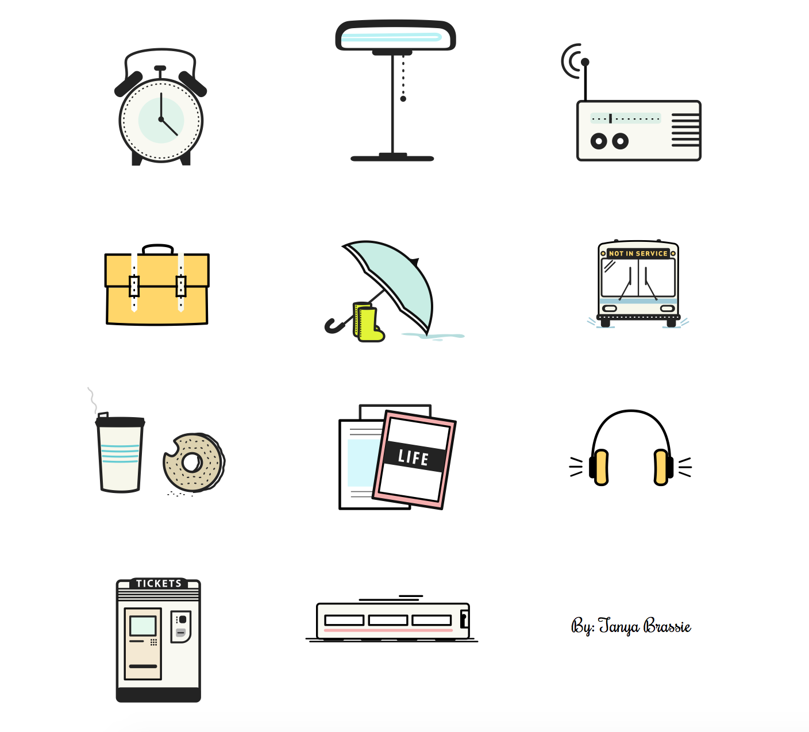

This year I was exposed to a terrible daily ritual practiced by many in the northeast: the commute. In my former life as a Texan, I could hop on my bicycle and be anywhere worthwhile in 30 minutes tops. Where I came from, highways are unclogged and straight to the point--none of this backed-up, squiggly nonesense. As I took up the practice of commuting, and started to realize how many life minutes were wasted per day trying to transport myself places, I grew forlorn and anxious. When I looked around the train full of robotic, Dockers-clad businessmen, sleeping or just staring off at things, I wondered if would also become a victim of the commute.
But then(!) I had a plan: I would make one icon a day on the train to improve my illustration skills. I've always been very impressed by the work people post on Dribbble and wanted to level up. I've also heard about all the awesome things SVGs are capable of and wanted to see for myself. Starting out, I made anything I wanted but then tried to make themed sets.
Another skill I wanted to improve was my animation skills. I had heard about Velocity.js and wanted to try to animate some of my SVG icons using this library. I'm not that familiar with javascript, and mostly just use CSS animations, so this seemed like a good side project to tinker around with.
Connecticut Commute Icon Set
These icons chronicle my morning routine and were the first set I finished. See the animated version I made with velocity.js. 
Presidential Mansions
Around Presidents day, while I was eating lunch, I had the idea of illustrating all the historical presidential mansions. These were pretty time consuming so I only made it through four. Also, as it turns out, most of the presidential mansions are not that spectacular looking (See: John Adams Peacefield house).
Summer Icon Set
Hip Hip Hooray! I survived my first winter and made it through to see sunlight past 5pm. In celebration, I made this set.
Camping Set
Just your typical camping essentials. No backstory here.
Random Appliance Set
Initially, I just wanted to make a Toledo scale since Toledo scales are very nice looking if you've ever seen on.
Some Crummy Christmas Icons (and some OK ones)
These are almost too embarrasing to post, but I'll do it anyways.